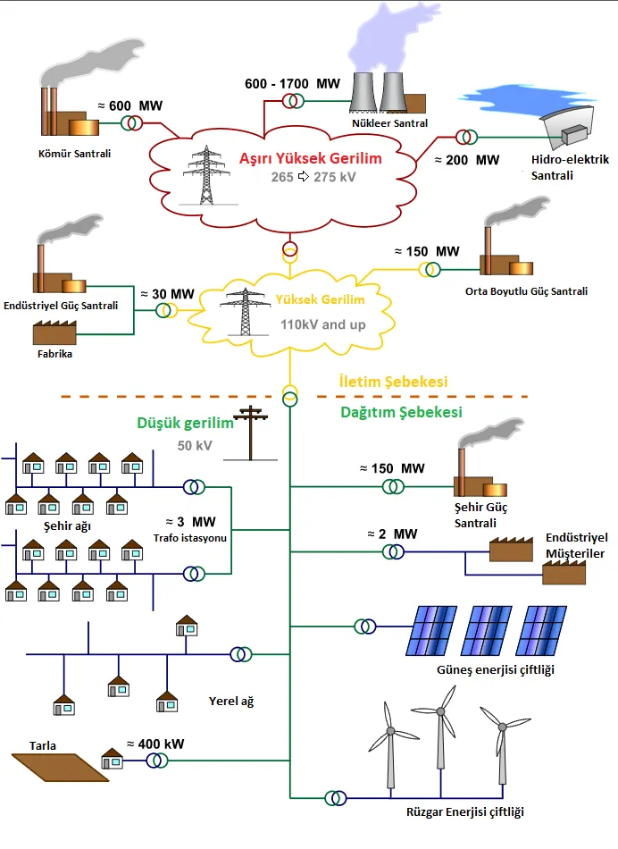

Daha önceki makalelerimizde belirttiğimiz üzere elektrik üretimi sonrasında trafolar kullanılarak, yüksek voltaj değerlerine çıkartılırlar. Böylece bu yüksek voltaj değerlerindeki elektrik enerjisinin uzun mesafelere minimum enerji kaybı olacak şekilde taşınabilmesi mümkün olur. Ancak burada bahsedilen yüksek voltajı, ~765.000 Volt, günlük hayatlarımızda prizlerimizde çektiğimiz miktarın, 220 Volt, o kadar üstündedir ki, evlere dağıtım yapılmadan önce bu sefer de alçaltıcı trafolar kullanılarak elektrik gerilimi kademeli olarak düşürülür. Ana kapak fotoğrafında, bu işlemin yapıldığı bir istasyonu görebilirsiniz. Bu makalemizde çeşitli kaynaklarda üretilmiş elektrik enerjisinin son kullanıcıya nasıl dağıtıldığını inceleyeceğiz.

Yandaki şemada, elektriğin üretiminde iletimine ve daha sonrasında müşterilere dağıtımına kadar ki süreci takip edebilirsiniz. Görüldüğü üzere, sisteme enerjisi girdisi bir çok farklı santralden olabilmektedir. Bunların her birinden üretilen elektrik enerjisinin gerilim miktarları da bu santrallerin bulundukları konumlara, ne kadar verimlilikle çalıştıklarına göre değişen değerlerde olabilir.
Santrallerde çeşitli işlemler sonucunda üretilen tüm elektrik enerjisi, şebekelere bağlı olan trafolar vasıtasıyla, tüketim için hazırlanır. Günlük kullanıma hazır hale getirilen elektrik, şehir veya kırsal bölgelerde yaşayan tüketicilere veya endüstriyel alanlara da, yerüstü veya yeraltı kablolarından müteşekkil iletim hatları aracılığıyla ulaştırılır.
Elektrik dağıtımı temelde basit bir mantıkla çalışıyor gibi görünse de bir şehirde altyapı kurmak hem maliyetlidir hem de zaman alır. Üstelik henüz bu sistemin kontrolü kısmına gelmedik bile. Yerelde olsun Şehirde olsun, gündelik kullanım için elektrik tüketimi her an aynı olmaz. Bu sebeple de, dağıtılan enerji miktarının anlık olarak takibi ve yönlendirilmesi gerekir. Bunun için oluşturulan kontrol sistemleri ve bu sistemleri kullanan mühendis ve teknisyenler, sistemin sürekli olarak doğru işleyebilmesi için çalışırlar.
Akıllı Şebekeler
Tüm elektrik dağıtım sistemi, şehirlerde, kırsal kesimlerde ve endüstriyel alanlarda, oluşturulan elektrik şebekeleri kullanılarak taşınır. Yukarıda da söylediğimiz gibi bu şebekelerin kontrolü için de önemli yatırımlar yapılır. Bu yatırımlar özellikle son onbeş yılda bir çok hükümet tarafında, elektrik enerjisinin verimli bir şekilde kullanımını teşvik ve kontrol edebilmek için “Akıllı Şebekeler” ismiyle anılan sistemlere yapılmaktadır. Akıllı şebekelerin, şu anda bir çok bölgede halen kullanımda olan geleneksel şebekelerden en büyük farkı, bunların dijital olarak kullanıcı ile üretici arasında haberleşmeye elverişli olması denebilir. Buradaki haberleşme ile, akıllı elektrik saatlerinden toplanan, tüketicinin gün içerisinde ihtiyacı olan elektrik enerjisinin, hangi saatler arasında en yüksek seviyeye çıktığı, ne kadar miktarda harcama yapıldığı gibi verilerin üretici veya dağıtıcılarla paylaşılması ifade edilir. Bu haberleşme gerçekten de enerji verimliliğine katkı sunabilir mi peki ?
İşte bu noktada küçük bir sistem örneği tasarlayıp üzerinde konuşalım. Diyelim ki, Çanakkale civarında denize yakın ve çok da rüzgar alan yazın da güneş alma açısının gayet olduğu bir yerde eviniz olsun. Burada devamlı olarak kullanacağımız elektrik enerjisi hem gün içerisinde hem de mevsimsel olarak değişiklik gösterecektir. Örneğin, kışın ısınma için doğalgaz yerine elektrik sobası kullanmayı tercih ediyorsunuz. Ayrıca, yazın da iyi güneş alan bir eviniz olduğu için kendi güneş paneliniz vasıtasıyla gündelik sıcak su ihtiyacınızı karşılayabiliyorsunuz. Ayrıca yılın büyük bir bölümde çok fazla rüzgar alan bir alanda yaşadığınız için, çevrenizde kurulu olan rüzgar santralleri, elektrik ihtiyacınızı karşılamaya yetecektir. Ancak bunun yanında çevrenizde kömür santrali olduğunu da biliyorsunuz ve harcadığınız elektrik belki de buradan sağlanıyor.

İşte yukarıdaki gibi bir sistemde, eğer üretici veya dağıtıcı ile tüketici arasında sürekli bir veri alışverişi olursa, günün hangi saatlerinde ve yılın hangi günlerinde kömür santralinden elde edilecek elektriğe ihtiyaç olduğu hesaplanabilecek ve böylece de hem tüketici olarak siz daha ucuza elektrik kullanabilecek iken üreticiler de bölgedeki potansiyeli fark edip belki de yenilenebilir enerji kaynaklarına yatırım yapmaya başlayacaklardır. Üstelik kömür santrallerinden elde edilen elektrik enerjisi daha az kullanılacağı için, çevreye daha az karbondioksit (CO2) salınımı olacaktır.
Mevcut şebeke sisteminin akıllılaştırılması elbette basit bir işlem değil. Bunun için ciddi bir maddi kaynak ayrılması gerekebilmektedir. Ancak orta ve uzun vadede oluşacak hem ekonomik hem çevresel faydaları göz önüne alındığında, hükümetlerin bu konuda öncü olarak işi ele alması elzem görünüyor.
19. yüzyılda henüz elektrik enerjisi yeni kullanıma alınmışken 20. yüzyılda her ne kadar hala yaklaşık 1 milyar insanın düzenli bir elektrik enerjisine bağlantısı olmasa da yaygınlaştı. İçinde bulunduğumuz 21. yüzyılda ise yapılması gereken bu enerjinin hem herkese ulaştırılması hem de verimli bir şekilde kullanılması için çaba göstermek olmalıdır. Bu yüzden sadece kanun yapıcılar ve üretici şirketler değil, kullanıcı olarak bizler de üzerimize düşen görevi yerine getirmeliyiz. Ayrıca enerji verimliliği konusunda halkı bilinçlendirmek için de sürekli yayınlar hazırlanıp, her mecrada olabildiğince çok fazla kişiye ulaşmak için adımlar atılmalı. Esasen şahsen ben de, bu sebeple burada bu yazıları kaleme almaya başladım. Umarım bir farkındalık ortaya koyabiliriz. Bir sonraki makalemizde görüşmek üzere.
Kaynakça:
İletim hatlarında çalışan bakım ekiplerinin bakım sırasında çekilmiş bu görüntü, yüksek voltaj değerindeki elektriğin tehlikesini gösteriyor..